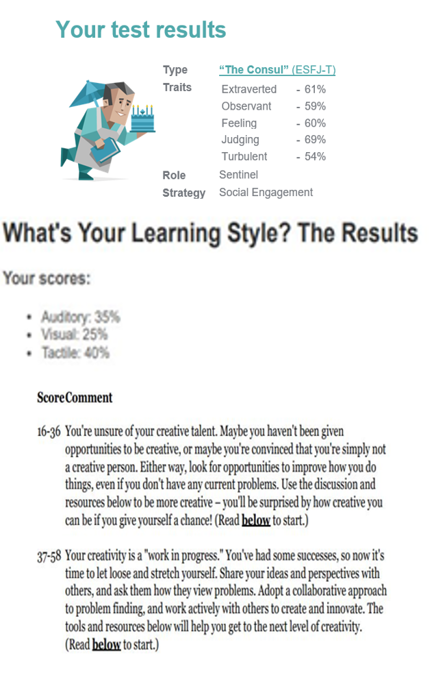

ASSIGNMENT 2:
OUR IT WORLD
OUR IT WORLD
Team Profile

Benjamin Merkli (s3896757)
Background/Hobbies & IT Experience/Interests:
I was born here in Melbourne, Australia and
grew up in the south-east suburb, Mulgrave, which is located
between Springvale and Glen Waverley.
I am half Lebanese and half Hungarian; however, I can only
speak English fluently based on my upbringing. I attended
Glen Waverley South Primary School (2008-2014) and then
transitioned to Brentwood Secondary College to complete
high school and obtain VCE certificate (2015-2020).
I have played Australian Football my entire life, as
it is something I really enjoy and quite decent at.
One fun fact about me is that I have been invited to a
player development course/session with the Oakleigh Chargers
and Hawthorn Football clubto improve on my skills and football
knowledge, therefore this can become a gateway to the AFL.
My interest in IT ranges to a variety of aspects within the
term “IT”. I am veryfond of cybersecurity and its ability
to protect systems from harmful risks, I am also very
interested in the software and hardwarethat is in a computer.
Liam Tinker (s3898218)
Background/Hobbies & IT Experience/Interests:
I was born and raised in Bendigo which is a country town 2 hours drive from melbourne. My hobbies are mostly just playing video games and going out with mates to pubs and parties and such.
My interest in IT has mostly been a lifelong thing, my dad works in telecommunications so I was always surrendered by computers, tech, and especially phones, I also realised and expanded this interest in school when I took a number of IT related electives.
I have been programming for about 6 years now and I have a fair bit of practical experience with networks and working with phones and the internet because of my dad’s job.
What do these test results mean and how can they be helpful to your group?
The results from these tests highlight that I have the personality traits of being a ‘natural-born leader’. People with this personality type embody the gifts of charisma and confidence, sand project authority in a way that draws crowds together behind a common goal.
After having taken the educationplanner.org Learning Style test with my results coming back as Auditory: 35%, Visual: 30%, and Tactile: 35% in terms of learning preferences with resulting
learning type being Auditory/Tactile.
This corresponds to group meetings as I will be able to fully
comprehend what each person is saying and understand their
deliverance on a deeper level. After having taken the MindTools
creativity my results returned as a 56 out of 80, this
being in the high part of the middle creativity range of 37-58.

Joshua Lam (s3902169)
Background/Hobbies & IT Experience/Interests:
My name is Joshua Lam, and I was born and raised in Australia.
My ethnicity is half vietnamese and half timorese. I have completed VCE Year 12 and graduated with a 72.3 ATAR, which has led me to currently study a Bachelors of IT at RMIT. My main spoken language is English.
I have loved to play video games ever since I was young,
and have also recently gained an interest in cars as well. I’ve
recently purchased a vehicle, a Toyota 86, and have added various
mods/self-serviced it.
My interest in IT involves enjoying taking sthe time to accurately locate and fix problems, and developed since I was a young age as I grew up with computers. My IT experience revolves mostly around self-learnt abilities such as CMD prompt, Device Manager, and being able to make HTML websites. I have also bbuilt many computers, including my own and friends.
What do these test results mean to you and how can they help your group?
I find these test results very interesting, as they provide meaningful, honest results to reveal what type of personality one has. Being a supposed ‘commander’ personality, it depicts that I should show leadership within my team, however if there is another ‘commander’ I am happy to easily follow another
person's instructions. These personality tests can be used as a basis to
outline what type of learner and person each of your team members
are, and further your understanding and synergy with them which I
believe help to increase team productivity.

Andy Lu (s3902328)
Background/Hobbies & IT Experience/Interests:
My parents both come from Vietnam and they both speak Vietnamese and Cantonese, as do I however I am not very fluent in any of those languages. I have just recently graduated high school and I am currently studying my first year of Bachelor of IT at RMIT University. During my spare time, I enjoy playing games with my friends.
Ever since I was young I had always had an interest in IT. It was something that I grew up around. My cousins were the ones who inspired and introduced me to computers and IT in general. Where I used to watch my cousins play games on their computers and watch them build and work on their websites. 2017 was the year where my knowledge of IT and computers grew most and was also the year that I decided that I wanted to pursue a career in IT.
Before starting UNI I had a little bit of experience in HTML from high school where I had taken an Introduction to Computing class, besides that, I didn’t have any experience. However, since I started UNI I recently started to learn Python and as well as learn more HTML. Personal Profile
What do these test results mean to you and how can they help your group?
In terms of how these results may reflect in the team, I believe
that there are pros and cons, pros being that it may help the team
to be more productive if there are individuals who are independent
as they can take the initiative in completing the set tasks. However,
the cons being, individuals who rely mostly on their skills may lack
in communicating with their team members which may be
counterproductive instead.

Personal Information:
Anton Catalano (s3890351)
Background/Hobbies & IT Experience/Interests:
Born and raised in Melbourne, Australia. I have an Italian background, where grandparents from both sides immigrated from Italy. I completed VCE in 2018. I did study for an undergraduate degree in Speech Pathology at ACU for two years. I withdrew at the end of 2020 to pursue something that I am more interested and passionate about, which is IT. Speak fluent English and I’m a passionate follower of sport, especially AFL and EPL.
My main interest in IT is the fact that I am engaging with technology daily. Whether it's from a television set to a laptop, I utilise it everyday. What's been a constant reminder of gaining interest in IT is of me solving errors that I come across when using a laptop. Currently, I have great knowledge in knowing how to use a computer. Having utilised a computer for over 10 years now, I can understand the specific basics on how to use it.
I'm also a keen learner and am willing to add some key skills to my arsenal. Whether it's from my casual job to currently in my first year, I'm really invested in learning new things and gaining such valuable insight.
What do these test results mean to you and how can they help your group?
The results highlighted from the tests indicate that I’m particularly people-focused and am willingly able to provide support to others. It’d be especially helpful from a team based perspective, enabling me to be really engaging when communicating with other people, with a key behaviour of mine being that the more I understand how a person behaves and how they communicate, the more comfortable I become.
Learning wise, in a group scenario, my tactile style would be particularly helpful when planning out how to undertake a necessary task and noting down all of the team members points of concern. Based on the creativity aspect, it would be vital in my confidence in a group scenario to pitch my ideas or thoughts early on, instead missing out on expressing my thoughts. It's something that I know
personally would not only help build that self-confidence but would especially
help gain that level of understanding with my team and be able to view from the others perspective.
Anton Catalano (s3890351)
Background/Hobbies & IT Experience/Interests:
Born and raised in Melbourne, Australia. I have an Italian background, where grandparents from both sides immigrated from Italy. I completed VCE in 2018. I did study for an undergraduate degree in Speech Pathology at ACU for two years. I withdrew at the end of 2020 to pursue something that I am more interested and passionate about, which is IT. Speak fluent English and I’m a passionate follower of sport, especially AFL and EPL.
My main interest in IT is the fact that I am engaging with technology daily. Whether it's from a television set to a laptop, I utilise it everyday. What's been a constant reminder of gaining interest in IT is of me solving errors that I come across when using a laptop. Currently, I have great knowledge in knowing how to use a computer. Having utilised a computer for over 10 years now, I can understand the specific basics on how to use it.
I'm also a keen learner and am willing to add some key skills to my arsenal. Whether it's from my casual job to currently in my first year, I'm really invested in learning new things and gaining such valuable insight.
What do these test results mean to you and how can they help your group?
The results highlighted from the tests indicate that I’m particularly people-focused and am willingly able to provide support to others. It’d be especially helpful from a team based perspective, enabling me to be really engaging when communicating with other people, with a key behaviour of mine being that the more I understand how a person behaves and how they communicate, the more comfortable I become.
Learning wise, in a group scenario, my tactile style would be particularly helpful when planning out how to undertake a necessary task and noting down all of the team members points of concern. Based on the creativity aspect, it would be vital in my confidence in a group scenario to pitch my ideas or thoughts early on, instead missing out on expressing my thoughts. It's something that I know
personally would not only help build that self-confidence but would especially
help gain that level of understanding with my team and be able to view from the others perspective.
IDEAL JOBS
| Name | Ideal Job + Description | Elements (Skills, Qualifications, Experience) Required |
|---|---|---|
| Ben | Senior PEN Tester - Mercedes Benz Canada
"Responsible for performing penetration tests in unique, complex and challenging environments.” It is a form of ethical hacking to further prevent a business suffering from future vicious cyber attacks. |
-University Degree in Information Technology -Certifications in either OSCP, OSCE or CISSP -Practical knowledge of the OWASP testing guide -Experience with both Python and security testing tools -Strong Communication and Problem Solving Skills |
| Anton | IT APPLICATION SUPPORT: Centorrino Technologies PTY LTD
This job specifically revolves around providing support and assisting customers of the company solve their IT related problems. Adding onto this, you would correspond with customer app's and the technological background segregated to this |
-Great skills in utilising Windows and knowing how to use a computer -You'd need to have sufficient knowledge in operating Active Directory Users and Computers, whilst also being experienced in utilising Group Policies -Ensuring you have the adaptability in such a fast paced environment is necessary |
| Joshua | Network Engineer
A network engineer is responsible for the planning, development and implementation of computer network and system services, as well as troubleshooting problems relating to them. What makes this job appealing to me is the troubleshooting of problems relating to its network system services, as I relatively find fixing problems very interesting and satisfying. |
-Ensuring network and firewall security are up to date -Preparing and maintaining documentation related to computer networks -Install, configure, test and maintain new networks and related applications -Implement network programming to support business needs -Degree or relevant IT certification -Microsoft certifications and Tertiary studies in the field of IT will be considered highly in a variety of these jobs |
| Andy | Network Engineer
The role of a Network Engineer primarily revolves around the management of an organization's computer networks as well as the setup and development of those networks. Furthermore, Networks Engineers will also provide assistance to employees as well as clientele of the business if a problem arises. |
-Bachelor Degree in Information Technology -Cisco Certified Network Associate Certificate -Cisco Certified Network Professionalâ Certificate -Excellent analytical and problem solving skills -Great communication skills |
| Liam | Chief Technology officer
This job is a high level leadership role in IT and as such oversees and leads multiple teams and projects within the company. The role would require reporting to the CEO and is the highest IT position in a company. As such a high level leadership role in IT the role would require the overseeing of projects for both internal and external use and also requires the ability to create a productive IT work environment |
-Degree in Information Technology -Experience in leadership roles -Experience in IT -Good management skills -Ability to work with clients |
IT WORK
Interviewee: Alson Huynh
What kind of work is done by the IT professional?
The current occupation of the IT professional is a Network & Security Engineer. Graduating with a bachelor's degree in Computer science at the age of 22, Alson worked his first IT-related career at the age of 23 as an Analyst Programmer, and moved to Network & Security engineering at the age of 29. Alson’s responsibilities involve a range of tasks, such as; -Designing and implementing networks in the OT environment -Design and implement virtual infrastructure -Provide any type of service that involves networking, servers or cybersecurity
What kinds of people does the IT professional interact with? Are they other IT professionals? Clients? Investors? The general public?
Alson mostly works with customers in the manufacturing industry, but also a large handful of interaction comes from technical managers or engineers when dealing with system design. If there are troubleshoot requests, it is usually with engineers or electricians.
Where do you spend most of your time in the workplace? At home? In the office? Do you prefer working at home or on-site?
At customers' sites, he prefers working on site because it is more convenient to interact with others in the workplace and will always have the necessary tools to perform tasks such as troubleshooting. Most of Alson’s interactions with customers is installing a new network or replacing an existing network.
What aspect of your position is the most challenging?
Finding the time to learn new things. In this role, you're expected to keep up with the latest technologies. Not only do you need to keep up with the traditional IT world, but we've gotta keep up with the OT industry too. Finding the time to do training and upskill and any of these new technologies is difficult. Also, when you're constantly in meetings it makes it difficult to actually do any work. But that's really the same for any job.
What do you find the most appealing about your position? Do you think your position is worth the challenges previously mentioned? Are there any other colleagues/friends that do the same or similar level of work and have they given up/dislike their position?
Alson finds the future prospects of his position the most appealing in hopes that it will lead down the path of cybersecurity. Challenges aside, the position has been very interesting and the workplace is very positive. The time spent in this position was a lot more enjoyable than an analyst programmer, as I get to travel interstate and overseas to perform my tasks, which is a huge plus. One colleague who was in this position recently gave up on this path to head down towards a more sales focused role, due to the challenges being a lot harder than he’d imagined and realised sales fit more for his passion.
RAW Interview Transcript
[19:31, 21/04/2021] Joshua Lam: Hello Alson, thank you for participating in this interview. Were you ready to begin?
[19:32, 21/04/2021] Alson Huynh: All good, let’s begin.
[19:34, 21/04/2021] Joshua Lam: What are your current and previous positions?
[19:35, 21/04/2021] Alson Huynh: Network & Security Engineer
[19:37, 27/04/2021] Alson Huynh: Previous IT related fields include an analyst programmer for a CRM software company in the utilities industry
[19:40 21/04/2021] Joshua Lam: How old were you when you started working in IT-related fields and what is your current age?
[19:42, 27/04/2021] Alson Huynh: Analyst programmer was my first related role at the age of 23. I am now 32 and started my network & security position at 29.. I graduated with a bachelor’s degree in Computer Science at the age of 22.
[19:45, 21/04/2021] Joshua Lam: What kind of work do you currently do? Please provide some responsibilities as a list in your response.
[19:49, 21/04/2021] Alson Huynh: I design and implement network and security solutions in the OT environment. To elaborate further, I: Design and implement networks in the OT environment, design and implement virtual infrastructure, provide any type of service that really involved networking, servers or cybersecurity
[19:50, 21/04/2021] Joshua Lam: What kind of people do you interact with in the workplace? Customers? Other IT professionals?
[19:55 21/04/2021] Alson Huynh: Customers in the manufacturing industry mostly.
[19:59, 27/04/2021] Alson Huynh: I'm also mostly interacting with technical managers or engineers when dealing with system design. If it's for a troubleshooting request, it's usually with the engineer or electrician
[20:03, 21/04/2021] Joshua Lam: Where do you spend most of your time in the workplace? At home? In the office? Do you prefer working at home or on-site?
[20:04 21/04/2021] Alson Huynh: At customers site and at home
[20:06 21/04/2021] Joshua Lam: What do you mostly do with customers? Resolve their networking problems? Meetings at home with coworkers?
[20:10 21/04/2021] Alson Huynh: Most of the time it's installing a new network or replacing an existing network
[20:11, 21/04/2021] Joshua Lam: What aspect of your position is the most challenging?
[20:18 21/04/2021] Alson Huynh: Finding the time to learn new things. In this role, you're expected to keep up with the latest technologies. Not only do you need to keep up with the traditional IT world, but we've gotta keep up with the OT industry too. Finding the time to do training and upskill and any of these new technologies is difficult. Also, when you're constantly in meetings it makes it difficult to actually do any work. But that's really the same for any job
[20:23, 21/04/2021] Joshua Lam: What do you find the most appealing about your position? From the scopes, it seems your position is a bit challenging and many others may not have found it worth it. Do you think your position is worth the challenges previously mentioned? Are there any other colleagues/friends that do the same or similar level of work and have they given up/dislike their position?
[20:30, 27/04/2021] Alson Huynh: I find the future prospects of my position the most appealing in hopes that it will lead down the path of cybersecurity. One plus of my job is getting to travel interstate and overseas to perform my tasks, and was definitely a lot more interesting than my analyst programming position. One colleague who was in this position recently gave up on this path to head down towards a more sales focused role, he found the position a bit difficult and enjoyed sales more passionately than network & security engineering.
[20:35, 27/04/2021] Joshua Lam: Thank you so much for participating in this interview, Alson. Have a wonderful day :).
[20:35, 27/04/2021] Alson Huynh: No worries, any time.
[19:31, 21/04/2021] Joshua Lam: Hello Alson, thank you for participating in this interview. Were you ready to begin?
[19:32, 21/04/2021] Alson Huynh: All good, let’s begin.
[19:34, 21/04/2021] Joshua Lam: What are your current and previous positions?
[19:35, 21/04/2021] Alson Huynh: Network & Security Engineer
[19:37, 27/04/2021] Alson Huynh: Previous IT related fields include an analyst programmer for a CRM software company in the utilities industry
[19:40 21/04/2021] Joshua Lam: How old were you when you started working in IT-related fields and what is your current age?
[19:42, 27/04/2021] Alson Huynh: Analyst programmer was my first related role at the age of 23. I am now 32 and started my network & security position at 29.. I graduated with a bachelor’s degree in Computer Science at the age of 22.
[19:45, 21/04/2021] Joshua Lam: What kind of work do you currently do? Please provide some responsibilities as a list in your response.
[19:49, 21/04/2021] Alson Huynh: I design and implement network and security solutions in the OT environment. To elaborate further, I: Design and implement networks in the OT environment, design and implement virtual infrastructure, provide any type of service that really involved networking, servers or cybersecurity
[19:50, 21/04/2021] Joshua Lam: What kind of people do you interact with in the workplace? Customers? Other IT professionals?
[19:55 21/04/2021] Alson Huynh: Customers in the manufacturing industry mostly.
[19:59, 27/04/2021] Alson Huynh: I'm also mostly interacting with technical managers or engineers when dealing with system design. If it's for a troubleshooting request, it's usually with the engineer or electrician
[20:03, 21/04/2021] Joshua Lam: Where do you spend most of your time in the workplace? At home? In the office? Do you prefer working at home or on-site?
[20:04 21/04/2021] Alson Huynh: At customers site and at home
[20:06 21/04/2021] Joshua Lam: What do you mostly do with customers? Resolve their networking problems? Meetings at home with coworkers?
[20:10 21/04/2021] Alson Huynh: Most of the time it's installing a new network or replacing an existing network
[20:11, 21/04/2021] Joshua Lam: What aspect of your position is the most challenging?
[20:18 21/04/2021] Alson Huynh: Finding the time to learn new things. In this role, you're expected to keep up with the latest technologies. Not only do you need to keep up with the traditional IT world, but we've gotta keep up with the OT industry too. Finding the time to do training and upskill and any of these new technologies is difficult. Also, when you're constantly in meetings it makes it difficult to actually do any work. But that's really the same for any job
[20:23, 21/04/2021] Joshua Lam: What do you find the most appealing about your position? From the scopes, it seems your position is a bit challenging and many others may not have found it worth it. Do you think your position is worth the challenges previously mentioned? Are there any other colleagues/friends that do the same or similar level of work and have they given up/dislike their position?
[20:30, 27/04/2021] Alson Huynh: I find the future prospects of my position the most appealing in hopes that it will lead down the path of cybersecurity. One plus of my job is getting to travel interstate and overseas to perform my tasks, and was definitely a lot more interesting than my analyst programming position. One colleague who was in this position recently gave up on this path to head down towards a more sales focused role, he found the position a bit difficult and enjoyed sales more passionately than network & security engineering.
[20:35, 27/04/2021] Joshua Lam: Thank you so much for participating in this interview, Alson. Have a wonderful day :).
[20:35, 27/04/2021] Alson Huynh: No worries, any time.
IT TECHNOLOGIES